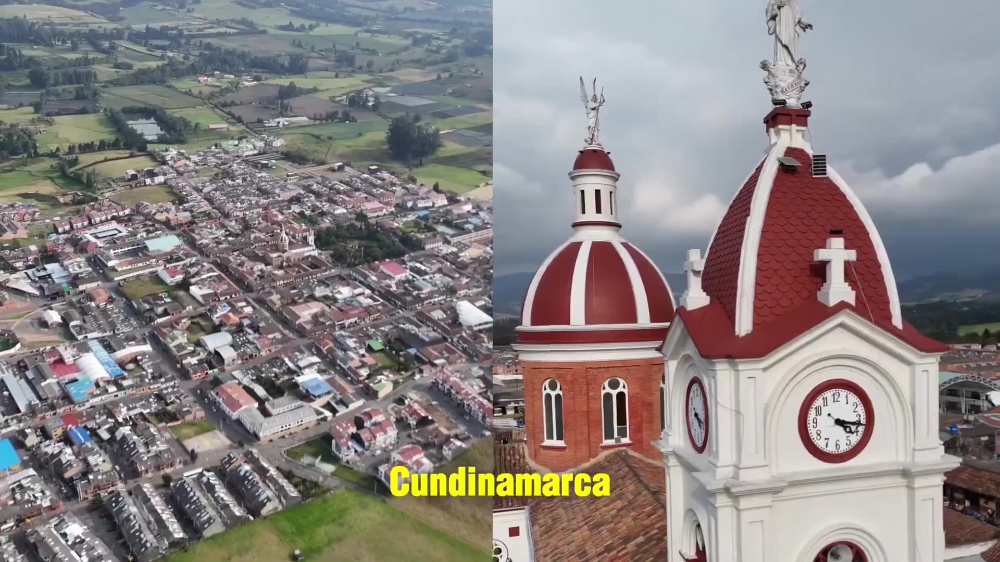

8mesas técnicas
Espacios de trabajo con dependencias y entidades del municipio.
#AsíCumplimos #Subachoque
Las personas que trabajan por nuestro territorio. Conozca al alcalde y al equipo que lidera la planeación, los servicios y el desarrollo de Subachoque.

Alcalde municipal
Secretario General y de Gobierno
Secretario de Obras Públicas
Secretaria de Planeación
Fotografía por confirmarSecretario de Desarrollo Social
Fotografía por confirmarSecretario de Ambiente y Competitividad
Fotografía por confirmarDirectora de Urbanismo
Fotografía por confirmarJefa de Control Interno
Fotografía por confirmarAprendamos de nuestro territorio
Conocer Subachoque es descubrir sus símbolos, su historia y las personas que le dan vida.

SUBACHOQUE · CUNDINAMARCAUn lugar que nos une.
Sistema integral para reunir, organizar, validar y convertir información territorial en insumo para decisiones públicas basadas en evidencia.
Data Territorio
Reunimos y organizamos información nacional, departamental y municipal para comprender el territorio y tomar decisiones con evidencia.
Población · Economía · Ambiente · Gestión pública
Las estadísticas importan porque permiten
identificar necesidades, comparar situaciones
y orientar inversiones.
Qué es, cómo funciona y cómo ayuda a tomar decisiones con evidencia.
La información pasa por varias etapas
para convertirse en evidencia útil para el territorio.
Nacional · Departamental · Municipal
La hoja de ruta para fortalecer la información estadística en el municipio, orientando la generación, uso y aprovechamiento de datos para una mejor toma de decisiones.
El Plan Estadístico Territorial define las prioridades, acciones y responsabilidades para consolidar un sistema de información estadística de calidad, pertinente y útil para el desarrollo del territorio.
Espacios de trabajo con dependencias y entidades del municipio.
Indicadores estratégicos identificados en la oferta municipal.
Sociodemográfica · Económica · Ambiental.
Acciones para fortalecer la producción y el uso de datos.
Conoce el propósito, los objetivos y los principales componentes del Plan Estadístico Territorial 2025–2029.
Identifica el ámbito de aplicación, los actores involucrados y el período de implementación del plan.
Conoce los conceptos, enfoques y referentes que orientan la formulación del plan.
Consulta los términos principales para comprender mejor el plan y su implementación en el territorio.
Territorio Inteligente 2.1 Conoce Data Territorio Publicaciones
Consulta revistas, boletines, papers, informes y otros productos gráficos del municipio para conocer resultados, análisis y hallazgos del territorio.
0 disponibles públicamente y archivos locales.
Revistas, papers, boletines, informes y recursos gráficos.
Fechas tomadas únicamente de los archivos incorporados.
Diseños de muestra, aún sin documento institucional.
Las portadas de muestra son ilustrativas. Los archivos auténticos aparecerán cuando se incorporen y verifiquen.
Preparando catálogo…
Consulta datos nacionales, departamentales y municipales sobre las dimensiones social, económica, ambiental e institucional del territorio.
Qué información incluye, cómo consultarla y cómo ayuda a tomar decisiones basadas en evidencia.
Salud y Protección Social
Población mayor de 59 años
Comparación territorial con datos y fechas verificables.
Los indicadores publicados muestran la fuente, el período y la unidad. Si no hay información verificable, no se muestran valores de ejemplo.
LA VOZ DEL TERRITORIO · DATOS AGREGADOS DE KOBO
Lo que las personas encuestadas cuentan sobre Subachoque, organizado por dimensiones y respaldado por las preguntas originales del formulario.
Cómo se realizó la caracterización, qué representan las respuestas y cómo interpretar sus resultados.
01 — EXPLORA LAS CUATRO DIMENSIONES
Información declarada por quienes participaron en el formulario de caracterización.
Áreas de esta dimensión
¿Está afiliado al sistema de salud?
Cobertura municipal · encuesta KoBo 2026
Datos descriptivos de personas que respondieron KoBo, no estimaciones representativas de toda la población. Denominador específico por pregunta; categorías con menos de cinco registros no se publican. Los apartados de vivienda/mejoramiento (17–22), identificación personal y respuestas individuales se excluyen de estas gráficas.
Este espacio conserva el visor de indicadores existente. Importa Excel, CSV o JSON con sector, indicador, valor, periodo y fuente. Los datos se guardan en este navegador; no están conectados automáticamente a Práctica País o KoBo ni se publican en el portal.
Herramienta complementaria dentro de Encuesta. Conserva las capas y puntos importados anteriormente; sus archivos se guardan solamente en este navegador y no se publican. El mapa principal de Encuesta se mantiene arriba.
Para puntos usa latitud y longitud; nombre, tipo, vereda y descripción son opcionales. También se admiten GeoJSON de tipo Point.
Reconoce las veredas de Subachoque y recorre una representación visual de su territorio.
Esta primera vista utiliza la capa esquemática de veredas existente en la aplicación. No sustituye cartografía oficial ni incorpora estadísticas no verificadas.
Cómo utilizar el mapa, seleccionar veredas e interpretar la información territorial.
Selecciona una vereda para explorarla.
Preparando visualización territorial…
03 / Territorio Inteligente
Documentos, metas y seguimiento del gobierno municipal.
Volver al Home ↗Estructura del plan, metas, documentos y seguimiento de compromisos.
03.01 / Plan de Desarrollo
El Plan de Desarrollo orienta las prioridades, inversiones y metas del gobierno municipal.
PDM vigente, acuerdo municipal, conceptos CAR y CTP, y matriz del plan.
03.02 / Plan de Desarrollo
Metas por programa y vigencia.
Matriz anualizada, indicadores y responsables.
03.03 / Plan de Desarrollo
Actividades de las dependencias vinculadas a las metas del plan.
Planes por dependencia y ejecución física y financiera.
03.04 / Plan de Desarrollo
Proyectos financiados con recursos de regalías.
Fichas de proyectos, financiación y documentos de seguimiento.
03.05 / Plan de Desarrollo
Resultados esperados e indicadores para medir su avance.
Líneas base, metas, valores observados y metodologías.
03.06 / Plan de Desarrollo
Resultados respaldados por evidencia documental.
Logros vinculados a programas, metas y documentos.
03.07 / Plan de Desarrollo
Relación entre programas municipales y metas ODS.
Matriz de correspondencias e indicadores.
03.08 / Plan de Desarrollo
Ubicación territorial de proyectos y metas del plan.
Coordenadas, capas y vínculos con la matriz del PDM.
03.09 / Plan de Desarrollo
Informes de seguimiento y rendición de cuentas del plan.
Documentos, periodos y relación con metas y proyectos.
03.10 / Plan de Desarrollo
Evidencia fotográfica y audiovisual de los proyectos y logros.
Recursos originales con fecha, ubicación y proyecto.
03.11 / Plan de Desarrollo
Conceptos utilizados en la planeación y seguimiento municipal.
Términos y fuentes oficiales del PDM.
04 / Territorio Inteligente
Proyectos estratégicos y evidencia de su ejecución.
Volver al Home ↗Cómo consultar los proyectos, su avance, la evidencia y las alertas.
04.01 / Unidad de Cumplimiento
Seguimiento a la ejecución de los proyectos estratégicos del municipio.
Prioridades y responsables institucionales.
04.02 / Unidad de Cumplimiento
Expediente del proyecto priorizado.
El expediente todavía no contiene información validada para este componente.
El expediente todavía no contiene información validada para este componente.
El expediente todavía no contiene información validada para este componente.
El expediente todavía no contiene información validada para este componente.
El expediente todavía no contiene información validada para este componente.
El expediente todavía no contiene información validada para este componente.
El expediente todavía no contiene información validada para este componente.
El expediente todavía no contiene información validada para este componente.
El expediente todavía no contiene información validada para este componente.
El expediente todavía no contiene información validada para este componente.
El expediente todavía no contiene información validada para este componente.
Ficha técnica y documentos del proyecto.
04.03 / Unidad de Cumplimiento
Expediente del proyecto priorizado.
El expediente todavía no contiene información validada para este componente.
El expediente todavía no contiene información validada para este componente.
El expediente todavía no contiene información validada para este componente.
El expediente todavía no contiene información validada para este componente.
El expediente todavía no contiene información validada para este componente.
El expediente todavía no contiene información validada para este componente.
El expediente todavía no contiene información validada para este componente.
El expediente todavía no contiene información validada para este componente.
El expediente todavía no contiene información validada para este componente.
El expediente todavía no contiene información validada para este componente.
El expediente todavía no contiene información validada para este componente.
Ficha técnica y documentos del proyecto.
04.04 / Unidad de Cumplimiento
Expediente del proyecto priorizado.
El expediente todavía no contiene información validada para este componente.
El expediente todavía no contiene información validada para este componente.
El expediente todavía no contiene información validada para este componente.
El expediente todavía no contiene información validada para este componente.
El expediente todavía no contiene información validada para este componente.
El expediente todavía no contiene información validada para este componente.
El expediente todavía no contiene información validada para este componente.
El expediente todavía no contiene información validada para este componente.
El expediente todavía no contiene información validada para este componente.
El expediente todavía no contiene información validada para este componente.
El expediente todavía no contiene información validada para este componente.
Ficha técnica y documentos del proyecto.
04.05 / Unidad de Cumplimiento
Expediente del proyecto priorizado.
El expediente todavía no contiene información validada para este componente.
El expediente todavía no contiene información validada para este componente.
El expediente todavía no contiene información validada para este componente.
El expediente todavía no contiene información validada para este componente.
El expediente todavía no contiene información validada para este componente.
El expediente todavía no contiene información validada para este componente.
El expediente todavía no contiene información validada para este componente.
El expediente todavía no contiene información validada para este componente.
El expediente todavía no contiene información validada para este componente.
El expediente todavía no contiene información validada para este componente.
El expediente todavía no contiene información validada para este componente.
Ficha técnica y documentos del proyecto.
04.06 / Unidad de Cumplimiento
Intervenciones en pisos, baños o cocinas de hogares vulnerables, priorizadas a partir de un diagnóstico técnico y social. Un hogar recibe un solo tipo de mejoramiento, según la definición del proyecto entregada.
El expediente todavía no contiene información validada para este componente.
El expediente todavía no contiene información validada para este componente.
El expediente todavía no contiene información validada para este componente.
El expediente todavía no contiene información validada para este componente.
El expediente todavía no contiene información validada para este componente.
El expediente todavía no contiene información validada para este componente.
El expediente todavía no contiene información validada para este componente.
El expediente todavía no contiene información validada para este componente.
El expediente todavía no contiene información validada para este componente.
El expediente todavía no contiene información validada para este componente.
El expediente todavía no contiene información validada para este componente.
Ficha técnica y documentos del proyecto.
04.07 / Unidad de Cumplimiento
Expediente del proyecto priorizado.
El expediente todavía no contiene información validada para este componente.
El expediente todavía no contiene información validada para este componente.
El expediente todavía no contiene información validada para este componente.
El expediente todavía no contiene información validada para este componente.
El expediente todavía no contiene información validada para este componente.
El expediente todavía no contiene información validada para este componente.
El expediente todavía no contiene información validada para este componente.
El expediente todavía no contiene información validada para este componente.
El expediente todavía no contiene información validada para este componente.
El expediente todavía no contiene información validada para este componente.
El expediente todavía no contiene información validada para este componente.
Ficha técnica y documentos del proyecto.
04.08 / Unidad de Cumplimiento
Expediente del proyecto priorizado.
El expediente todavía no contiene información validada para este componente.
El expediente todavía no contiene información validada para este componente.
El expediente todavía no contiene información validada para este componente.
El expediente todavía no contiene información validada para este componente.
El expediente todavía no contiene información validada para este componente.
El expediente todavía no contiene información validada para este componente.
El expediente todavía no contiene información validada para este componente.
El expediente todavía no contiene información validada para este componente.
El expediente todavía no contiene información validada para este componente.
El expediente todavía no contiene información validada para este componente.
El expediente todavía no contiene información validada para este componente.
Ficha técnica y documentos del proyecto.
04.09 / Unidad de Cumplimiento
Informes de seguimiento de los proyectos priorizados.
Documentos oficiales y periodos de seguimiento.
04.10 / Unidad de Cumplimiento
Términos del seguimiento a proyectos.
Definiciones y fuentes oficiales.
05 / Territorio Inteligente
Consulta de las políticas del municipio.
Volver al Home ↗Para qué sirven las políticas municipales y cómo consultar sus documentos.
05.01 / Políticas Públicas
La documentación recibida identifica este módulo, pero no desarrolla sus capacidades.
Inventario de políticas aprobadas y especificación de su seguimiento.
06 / Territorio Inteligente
Lecturas del territorio sustentadas en información verificable.
Volver al Home ↗06.01 / Análisis territorial
Los análisis se incorporarán a partir de bases y documentos validados.
Estudios, fuentes y resultados aprobados para publicación.
07 / Territorio Inteligente
Trámites y oferta institucional de Subachoque.
Volver al Home ↗07.01 / Servicios municipales
Consulta de trámites y servicios ofrecidos por la administración municipal.
Catálogo oficial con requisitos, tiempos, costos y canales de atención.
La consulta pública está disponible. El acceso de funcionarios se habilitará cuando se configure la autenticación institucional.

Personas unidas por el compromiso con Subachoque y el trabajo por nuestra comunidad.
La Alcaldía de Subachoque reúne experiencia en gestión pública, planeación, desarrollo social, ambiente y obras públicas para trabajar por el territorio.
Conozca a las personas que lideran las dependencias municipales, su formación y su trayectoria al servicio de la comunidad.
Transformar el territorio empieza por trabajar juntos y convertir las prioridades de Subachoque en acciones.
Alcalde municipal
Secretario General y de Gobierno
Secretario de Obras Públicas
Secretaria de Planeación
Fotografía por confirmarSecretario de Desarrollo Social
Fotografía por confirmarSecretario de Ambiente y Competitividad
Fotografía por confirmarDirectora de Urbanismo
Fotografía por confirmarJefa de Control Interno
Fotografía por confirmarNo hay integrantes que coincidan con esta búsqueda.
Alcalde municipal
AlcaldíaSecretario General y de Gobierno
GobiernoSecretario de Obras Públicas
Obras PúblicasSecretaria de Planeación
PlaneaciónSecretario de Desarrollo Social
Desarrollo SocialSecretario de Ambiente y Competitividad
AmbienteDirectora de Urbanismo
UrbanismoJefa de Control Interno
Control InternoConectamos información, capacidades institucionales y personas para fortalecer las decisiones públicas y el desarrollo de Subachoque.
Hagamos que suceda ↗Alcaldía
Alcalde municipal
Comunicador social y periodista de la Universidad Santo Tomás, especialista en Administración Pública Contemporánea de la ESAP, con estudios en Alta Gerencia para la Competitividad de la Universidad Externado de Colombia. Cuenta con más de 25 años de experiencia en el sector público y en proyectos de administración y comunicación institucional.
Ha sido asesor en la Cámara de Representantes, secretario de Prensa y Comunicaciones de la Gobernación de Cundinamarca y consultor en entidades departamentales.
Información del directorio y las publicaciones de la Alcaldía de Subachoque.
Conocer al resto del equipo ↗Gobierno
Secretario General y de Gobierno
Coronel retirado de la Policía Nacional, institución a la que perteneció durante 31 años. Es abogado, profesional en Criminalística, administrador policial y magíster en Seguridad Pública.
Tiene especializaciones en seguridad, docencia universitaria y procedimiento penal constitucional y justicia militar. Ha ejercido como juez y fiscal en la Justicia Penal Militar, además de ser columnista y docente universitario.
Información del directorio y las publicaciones de la Alcaldía de Subachoque.
Conocer al resto del equipo ↗Obras Públicas
Secretario de Obras Públicas
Ingeniero civil de la Universidad de La Salle, nacido en Subachoque. Cuenta con 18 años de experiencia en el sector de la construcción.
Su trayectoria comprende administración, interventoría, supervisión técnica y financiera, ejecución de obra civil, estructuras y redes de alcantarillado y agua potable.
Información del directorio y las publicaciones de la Alcaldía de Subachoque.
Conocer al resto del equipo ↗Fotografía por confirmar
Planeación
Secretaria de Planeación
Abogada de UNIAGRARIA, especialista en Derecho Administrativo de la Universidad Santo Tomás y en Responsabilidad Civil y del Estado de la Universidad de La Sabana.
Cuenta con más de diez años de experiencia en el sector público. Ha trabajado en las alcaldías de Fómeque y Tabio y en la Gobernación de Cundinamarca, en funciones jurídicas, de participación ciudadana y de asesoría.
Información del directorio y las publicaciones de la Alcaldía de Subachoque.
Conocer al resto del equipo ↗Fotografía por confirmar
Desarrollo Social
Secretario de Desarrollo Social
Licenciado en Administración y Supervisión Educativa de la Universidad de La Sabana, ingeniero de Sistemas de la EAN y especialista en Gerencia de Recurso Humano de la Universidad Externado de Colombia. Cursó el programa de Alta Gerencia de INALDE Business School.
Ha trabajado en docencia, administración y talento humano. Fue director y creador del Centro Integral de Atención al Ciudadano de la Cancillería y segundo secretario en el Consulado General de Colombia en Madrid. Es empresario de Productos Lácteos Andalucía.
Información del directorio y las publicaciones de la Alcaldía de Subachoque.
Conocer al resto del equipo ↗Fotografía por confirmar
Ambiente
Secretario de Ambiente y Competitividad
Subachoqueño, ingeniero ambiental y especialista en Derecho del Medio Ambiente.
Trabajó durante cuatro años como profesional de apoyo en la Secretaría de Ambiente del municipio de Subachoque.
Información del directorio y las publicaciones de la Alcaldía de Subachoque.
Conocer al resto del equipo ↗Fotografía por confirmar
Urbanismo
Directora de Urbanismo
Arquitecta y directora de Urbanismo de la Alcaldía de Subachoque.
La Dirección de Urbanismo depende de la Secretaría de Planeación y orienta el desarrollo del territorio bajo criterios técnicos y reglamentarios, con primacía del interés general.
Información del directorio y las publicaciones de la Alcaldía de Subachoque.
Conocer al resto del equipo ↗Fotografía por confirmar
Control Interno
Jefa de Control Interno
Administradora de empresas, auditora interna HSEQ y egresada del Colegio Departamental Ricardo González de Subachoque. Tomó posesión de la Oficina de Control Interno en enero de 2026, tras un proceso público de méritos.
Cuenta con más de doce años de experiencia en asesoría de calidad en los sectores público y privado. Su trayectoria incluye el Ejército Nacional, la Gobernación de Cundinamarca, la Empresa de Aguas y Aseo y el Concejo Municipal.
Información del directorio y las publicaciones de la Alcaldía de Subachoque.
Conocer al resto del equipo ↗